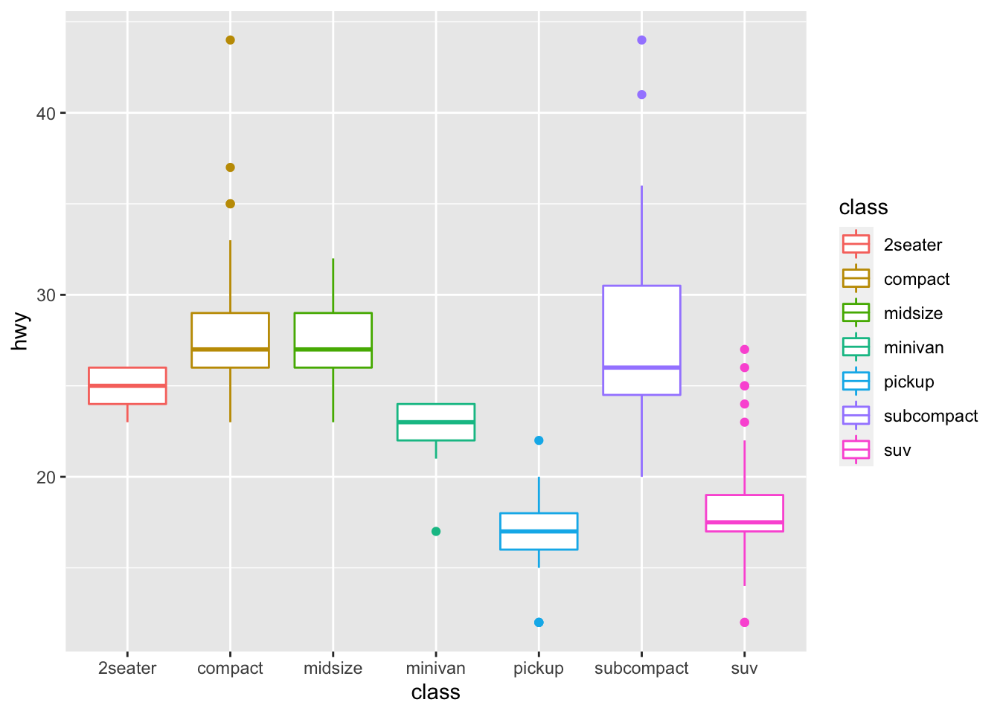

Chapter 2 Data Preprocessing
While exploring data, we need to preprocess it properly for our purpose. And these work can be repeat until we construct a dataset that can make our probabilistic model well.
2.1 ifelse
ifelse is Conditional Statments function that is very simple and useful in R. We can use this with just 3 parameters - condition, return value when it’s true, return value when it’s false.
let’s see example code.
first, print the head of dataset
head(mpg$hwy)## [1] 29 29 31 30 26 26And let’s apply ifelse to this head. if the hwy(highway fuel efficiency) is higher than 30, returns ‘Good.’
ifelse(head(mpg$hwy) > 30, 'Good', 'Bad')## [1] "Bad" "Bad" "Good" "Bad" "Bad" "Bad"We can use this data by assign method(<-). Let’s Control Entire variable.
evaluate_hwy <- ifelse(mpg$hwy > 30, 'Good', 'Bad')
print(evaluate_hwy)## [1] "Bad" "Bad" "Good" "Bad" "Bad" "Bad" "Bad" "Bad" "Bad" "Bad"
## [11] "Bad" "Bad" "Bad" "Bad" "Bad" "Bad" "Bad" "Bad" "Bad" "Bad"
## [21] "Bad" "Bad" "Bad" "Bad" "Bad" "Bad" "Bad" "Bad" "Bad" "Bad"
## [31] "Bad" "Bad" "Bad" "Bad" "Bad" "Bad" "Bad" "Bad" "Bad" "Bad"
## [41] "Bad" "Bad" "Bad" "Bad" "Bad" "Bad" "Bad" "Bad" "Bad" "Bad"
## [51] "Bad" "Bad" "Bad" "Bad" "Bad" "Bad" "Bad" "Bad" "Bad" "Bad"
## [61] "Bad" "Bad" "Bad" "Bad" "Bad" "Bad" "Bad" "Bad" "Bad" "Bad"
## [71] "Bad" "Bad" "Bad" "Bad" "Bad" "Bad" "Bad" "Bad" "Bad" "Bad"
## [81] "Bad" "Bad" "Bad" "Bad" "Bad" "Bad" "Bad" "Bad" "Bad" "Bad"
## [91] "Bad" "Bad" "Bad" "Bad" "Bad" "Bad" "Bad" "Bad" "Bad" "Good"
## [101] "Good" "Good" "Bad" "Good" "Good" "Good" "Good" "Bad" "Bad" "Bad"
## [111] "Bad" "Good" "Bad" "Bad" "Bad" "Bad" "Bad" "Bad" "Bad" "Bad"
## [121] "Bad" "Bad" "Bad" "Bad" "Bad" "Bad" "Bad" "Bad" "Bad" "Bad"
## [131] "Bad" "Bad" "Bad" "Bad" "Bad" "Bad" "Bad" "Bad" "Bad" "Bad"
## [141] "Bad" "Bad" "Bad" "Good" "Good" "Bad" "Bad" "Bad" "Bad" "Bad"
## [151] "Bad" "Bad" "Bad" "Bad" "Bad" "Bad" "Bad" "Bad" "Bad" "Bad"
## [161] "Bad" "Bad" "Bad" "Bad" "Bad" "Bad" "Bad" "Bad" "Bad" "Bad"
## [171] "Bad" "Bad" "Bad" "Bad" "Bad" "Bad" "Bad" "Bad" "Bad" "Bad"
## [181] "Bad" "Good" "Good" "Bad" "Bad" "Bad" "Bad" "Bad" "Good" "Good"
## [191] "Bad" "Bad" "Bad" "Bad" "Good" "Good" "Good" "Good" "Bad" "Bad"
## [201] "Bad" "Bad" "Bad" "Bad" "Bad" "Bad" "Bad" "Bad" "Bad" "Bad"
## [211] "Bad" "Bad" "Good" "Bad" "Bad" "Bad" "Bad" "Bad" "Bad" "Bad"
## [221] "Bad" "Good" "Good" "Bad" "Bad" "Bad" "Bad" "Bad" "Bad" "Bad"
## [231] "Bad" "Bad" "Bad" "Bad"Then, Why is this necessary?
Sometimes we need categorical data(nominal data or ordinal data) for not only visualization but also data handling. Especially, We do not always get gaussian distribution dataset, so since the data is not uniform, it is necessary to divide it into appropriate intervals.
We can use this function to not only create new variable but also add another column.
df_mpg <- mpg
df_mpg['eval_hwy'] <- ifelse(df_mpg$hwy>30, 'High', 'Low')
df_mpg$eval_hwy## [1] "Low" "Low" "High" "Low" "Low" "Low" "Low" "Low" "Low" "Low"
## [11] "Low" "Low" "Low" "Low" "Low" "Low" "Low" "Low" "Low" "Low"
## [21] "Low" "Low" "Low" "Low" "Low" "Low" "Low" "Low" "Low" "Low"
## [31] "Low" "Low" "Low" "Low" "Low" "Low" "Low" "Low" "Low" "Low"
## [41] "Low" "Low" "Low" "Low" "Low" "Low" "Low" "Low" "Low" "Low"
## [51] "Low" "Low" "Low" "Low" "Low" "Low" "Low" "Low" "Low" "Low"
## [61] "Low" "Low" "Low" "Low" "Low" "Low" "Low" "Low" "Low" "Low"
## [71] "Low" "Low" "Low" "Low" "Low" "Low" "Low" "Low" "Low" "Low"
## [81] "Low" "Low" "Low" "Low" "Low" "Low" "Low" "Low" "Low" "Low"
## [91] "Low" "Low" "Low" "Low" "Low" "Low" "Low" "Low" "Low" "High"
## [101] "High" "High" "Low" "High" "High" "High" "High" "Low" "Low" "Low"
## [111] "Low" "High" "Low" "Low" "Low" "Low" "Low" "Low" "Low" "Low"
## [121] "Low" "Low" "Low" "Low" "Low" "Low" "Low" "Low" "Low" "Low"
## [131] "Low" "Low" "Low" "Low" "Low" "Low" "Low" "Low" "Low" "Low"
## [141] "Low" "Low" "Low" "High" "High" "Low" "Low" "Low" "Low" "Low"
## [151] "Low" "Low" "Low" "Low" "Low" "Low" "Low" "Low" "Low" "Low"
## [161] "Low" "Low" "Low" "Low" "Low" "Low" "Low" "Low" "Low" "Low"
## [171] "Low" "Low" "Low" "Low" "Low" "Low" "Low" "Low" "Low" "Low"
## [181] "Low" "High" "High" "Low" "Low" "Low" "Low" "Low" "High" "High"
## [191] "Low" "Low" "Low" "Low" "High" "High" "High" "High" "Low" "Low"
## [201] "Low" "Low" "Low" "Low" "Low" "Low" "Low" "Low" "Low" "Low"
## [211] "Low" "Low" "High" "Low" "Low" "Low" "Low" "Low" "Low" "Low"
## [221] "Low" "High" "High" "Low" "Low" "Low" "Low" "Low" "Low" "Low"
## [231] "Low" "Low" "Low" "Low"2.2 dplyr :: mutate
In R, dplyr package is the most popular library for data preprocessing. Especially it provides pipe(‘%>%’), and it’s very helpful for intuitive coding. And mutate in dplyr package do exactly same work as the one above, However it is simpler and easier to use. Let’s see this.
(before load, you have to install “dplyr” package)
# install.packages("dplyr")
library(dplyr)##
## Attaching package: 'dplyr'## The following objects are masked from 'package:stats':
##
## filter, lag## The following objects are masked from 'package:base':
##
## intersect, setdiff, setequal, unionhead(df_mpg)## # A tibble: 6 x 12
## manufacturer model displ year cyl trans drv cty hwy fl class
## <chr> <chr> <dbl> <int> <int> <chr> <chr> <int> <int> <chr> <chr>
## 1 audi a4 1.8 1999 4 auto(l5) f 18 29 p compa…
## 2 audi a4 1.8 1999 4 manual(m5) f 21 29 p compa…
## 3 audi a4 2 2008 4 manual(m6) f 20 31 p compa…
## 4 audi a4 2 2008 4 auto(av) f 21 30 p compa…
## 5 audi a4 2.8 1999 6 auto(l5) f 16 26 p compa…
## 6 audi a4 2.8 1999 6 manual(m5) f 18 26 p compa…
## # … with 1 more variable: eval_hwy <chr>We’ll use mutate function and pipe syntex to handle cty(city fuel economy) column.
df_mpg %>%
mutate(mean_fuel = (cty + hwy)/2) %>%
head## # A tibble: 6 x 13
## manufacturer model displ year cyl trans drv cty hwy fl class
## <chr> <chr> <dbl> <int> <int> <chr> <chr> <int> <int> <chr> <chr>
## 1 audi a4 1.8 1999 4 auto(l5) f 18 29 p compa…
## 2 audi a4 1.8 1999 4 manual(m5) f 21 29 p compa…
## 3 audi a4 2 2008 4 manual(m6) f 20 31 p compa…
## 4 audi a4 2 2008 4 auto(av) f 21 30 p compa…
## 5 audi a4 2.8 1999 6 auto(l5) f 16 26 p compa…
## 6 audi a4 2.8 1999 6 manual(m5) f 18 26 p compa…
## # … with 2 more variables: eval_hwy <chr>, mean_fuel <dbl>We can see the last column is added and named with mean_fuel. We didn’t have to use the name of dataframa(df_mpg) repeatly to use columns. It’s very nice.
And of course we can use ifelse function with the pipe and mutate.
df_mpg %>%
mutate(mean_fuel = (cty + hwy)/2,
eval_fuel = ifelse(mean_fuel > 20, 'high', 'low')) %>%
head## # A tibble: 6 x 14
## manufacturer model displ year cyl trans drv cty hwy fl class
## <chr> <chr> <dbl> <int> <int> <chr> <chr> <int> <int> <chr> <chr>
## 1 audi a4 1.8 1999 4 auto(l5) f 18 29 p compa…
## 2 audi a4 1.8 1999 4 manual(m5) f 21 29 p compa…
## 3 audi a4 2 2008 4 manual(m6) f 20 31 p compa…
## 4 audi a4 2 2008 4 auto(av) f 21 30 p compa…
## 5 audi a4 2.8 1999 6 auto(l5) f 16 26 p compa…
## 6 audi a4 2.8 1999 6 manual(m5) f 18 26 p compa…
## # … with 3 more variables: eval_hwy <chr>, mean_fuel <dbl>, eval_fuel <chr>If you want to use this data table continuously, you have to assign this table to the new variable like this.
new_mpg <- df_mpg %>%
mutate(mean_fuel = (cty + hwy)/2,
eval_fuel = ifelse(mean_fuel > 20, 'high', 'low'))str(new_mpg)## tibble [234 × 14] (S3: tbl_df/tbl/data.frame)
## $ manufacturer: chr [1:234] "audi" "audi" "audi" "audi" ...
## $ model : chr [1:234] "a4" "a4" "a4" "a4" ...
## $ displ : num [1:234] 1.8 1.8 2 2 2.8 2.8 3.1 1.8 1.8 2 ...
## $ year : int [1:234] 1999 1999 2008 2008 1999 1999 2008 1999 1999 2008 ...
## $ cyl : int [1:234] 4 4 4 4 6 6 6 4 4 4 ...
## $ trans : chr [1:234] "auto(l5)" "manual(m5)" "manual(m6)" "auto(av)" ...
## $ drv : chr [1:234] "f" "f" "f" "f" ...
## $ cty : int [1:234] 18 21 20 21 16 18 18 18 16 20 ...
## $ hwy : int [1:234] 29 29 31 30 26 26 27 26 25 28 ...
## $ fl : chr [1:234] "p" "p" "p" "p" ...
## $ class : chr [1:234] "compact" "compact" "compact" "compact" ...
## $ eval_hwy : chr [1:234] "Low" "Low" "High" "Low" ...
## $ mean_fuel : num [1:234] 23.5 25 25.5 25.5 21 22 22.5 22 20.5 24 ...
## $ eval_fuel : chr [1:234] "high" "high" "high" "high" ...qplot(new_mpg$mean_fuel)## `stat_bin()` using `bins = 30`. Pick better value with `binwidth`.
qplot(new_mpg$eval_fuel)
We can use more functions from dplyr package. The commonly used functions that except mutate we have seen already are filter(), select(), arrange(), summarise(). Let’s look at these one by one.
2.3 dplyr :: filter
First, filter() function. filter extracts rows by some conditions.
head(new_mpg)## # A tibble: 6 x 14
## manufacturer model displ year cyl trans drv cty hwy fl class
## <chr> <chr> <dbl> <int> <int> <chr> <chr> <int> <int> <chr> <chr>
## 1 audi a4 1.8 1999 4 auto(l5) f 18 29 p compa…
## 2 audi a4 1.8 1999 4 manual(m5) f 21 29 p compa…
## 3 audi a4 2 2008 4 manual(m6) f 20 31 p compa…
## 4 audi a4 2 2008 4 auto(av) f 21 30 p compa…
## 5 audi a4 2.8 1999 6 auto(l5) f 16 26 p compa…
## 6 audi a4 2.8 1999 6 manual(m5) f 18 26 p compa…
## # … with 3 more variables: eval_hwy <chr>, mean_fuel <dbl>, eval_fuel <chr>If you want to extract only audi, you can use filter.
new_mpg %>%
filter(manufacturer=='audi')## # A tibble: 18 x 14
## manufacturer model displ year cyl trans drv cty hwy fl class
## <chr> <chr> <dbl> <int> <int> <chr> <chr> <int> <int> <chr> <chr>
## 1 audi a4 1.8 1999 4 auto(l… f 18 29 p comp…
## 2 audi a4 1.8 1999 4 manual… f 21 29 p comp…
## 3 audi a4 2 2008 4 manual… f 20 31 p comp…
## 4 audi a4 2 2008 4 auto(a… f 21 30 p comp…
## 5 audi a4 2.8 1999 6 auto(l… f 16 26 p comp…
## 6 audi a4 2.8 1999 6 manual… f 18 26 p comp…
## 7 audi a4 3.1 2008 6 auto(a… f 18 27 p comp…
## 8 audi a4 quat… 1.8 1999 4 manual… 4 18 26 p comp…
## 9 audi a4 quat… 1.8 1999 4 auto(l… 4 16 25 p comp…
## 10 audi a4 quat… 2 2008 4 manual… 4 20 28 p comp…
## 11 audi a4 quat… 2 2008 4 auto(s… 4 19 27 p comp…
## 12 audi a4 quat… 2.8 1999 6 auto(l… 4 15 25 p comp…
## 13 audi a4 quat… 2.8 1999 6 manual… 4 17 25 p comp…
## 14 audi a4 quat… 3.1 2008 6 auto(s… 4 17 25 p comp…
## 15 audi a4 quat… 3.1 2008 6 manual… 4 15 25 p comp…
## 16 audi a6 quat… 2.8 1999 6 auto(l… 4 15 24 p mids…
## 17 audi a6 quat… 3.1 2008 6 auto(s… 4 17 25 p mids…
## 18 audi a6 quat… 4.2 2008 8 auto(s… 4 16 23 p mids…
## # … with 3 more variables: eval_hwy <chr>, mean_fuel <dbl>, eval_fuel <chr>If you want to extract audi a4 model,
new_mpg %>%
filter(manufacturer=='audi' & model=='a4')## # A tibble: 7 x 14
## manufacturer model displ year cyl trans drv cty hwy fl class
## <chr> <chr> <dbl> <int> <int> <chr> <chr> <int> <int> <chr> <chr>
## 1 audi a4 1.8 1999 4 auto(l5) f 18 29 p compa…
## 2 audi a4 1.8 1999 4 manual(m5) f 21 29 p compa…
## 3 audi a4 2 2008 4 manual(m6) f 20 31 p compa…
## 4 audi a4 2 2008 4 auto(av) f 21 30 p compa…
## 5 audi a4 2.8 1999 6 auto(l5) f 16 26 p compa…
## 6 audi a4 2.8 1999 6 manual(m5) f 18 26 p compa…
## 7 audi a4 3.1 2008 6 auto(av) f 18 27 p compa…
## # … with 3 more variables: eval_hwy <chr>, mean_fuel <dbl>, eval_fuel <chr>If you want to extract audi a4 that have Good for highway fuel economy,
new_mpg %>%
filter(manufacturer=='audi' & model=='a4' & eval_hwy == 'High')## # A tibble: 1 x 14
## manufacturer model displ year cyl trans drv cty hwy fl class
## <chr> <chr> <dbl> <int> <int> <chr> <chr> <int> <int> <chr> <chr>
## 1 audi a4 2 2008 4 manual(m6) f 20 31 p compa…
## # … with 3 more variables: eval_hwy <chr>, mean_fuel <dbl>, eval_fuel <chr>Yes, now you can choose the car that you want.
2.4 dplyr :: select
Next, select() function.
We have used filter() to extract rows, now we’ll use select() to extract columns.
new_mpg %>%
select(manufacturer) %>%
head## # A tibble: 6 x 1
## manufacturer
## <chr>
## 1 audi
## 2 audi
## 3 audi
## 4 audi
## 5 audi
## 6 audiTwo or more columns can be extracted at the same time.
new_mpg %>%
select(manufacturer, class, hwy) %>%
head## # A tibble: 6 x 3
## manufacturer class hwy
## <chr> <chr> <int>
## 1 audi compact 29
## 2 audi compact 29
## 3 audi compact 31
## 4 audi compact 30
## 5 audi compact 26
## 6 audi compact 26And with pipe, we can extract some rows and some columns at the same time too.
new_mpg %>%
select(manufacturer, model, class, hwy) %>%
filter(hwy > 23) %>%
head(10)## # A tibble: 10 x 4
## manufacturer model class hwy
## <chr> <chr> <chr> <int>
## 1 audi a4 compact 29
## 2 audi a4 compact 29
## 3 audi a4 compact 31
## 4 audi a4 compact 30
## 5 audi a4 compact 26
## 6 audi a4 compact 26
## 7 audi a4 compact 27
## 8 audi a4 quattro compact 26
## 9 audi a4 quattro compact 25
## 10 audi a4 quattro compact 282.5 dplyr :: arrange
In case of numerical data(variable), we can order it. If data is categorical variable, It’ll return error.
new_mpg %>%
select(manufacturer, model, class, hwy) %>%
arrange(hwy) %>%
head(10)## # A tibble: 10 x 4
## manufacturer model class hwy
## <chr> <chr> <chr> <int>
## 1 dodge dakota pickup 4wd pickup 12
## 2 dodge durango 4wd suv 12
## 3 dodge ram 1500 pickup 4wd pickup 12
## 4 dodge ram 1500 pickup 4wd pickup 12
## 5 jeep grand cherokee 4wd suv 12
## 6 chevrolet k1500 tahoe 4wd suv 14
## 7 jeep grand cherokee 4wd suv 14
## 8 chevrolet c1500 suburban 2wd suv 15
## 9 chevrolet k1500 tahoe 4wd suv 15
## 10 dodge dakota pickup 4wd pickup 15If you want to sort dataset from highest to lowest highway fuel economy, wrapping arrange variable by desc()
new_mpg %>%
select(manufacturer, model, class, hwy) %>%
arrange(desc(hwy)) %>%
head(10)## # A tibble: 10 x 4
## manufacturer model class hwy
## <chr> <chr> <chr> <int>
## 1 volkswagen jetta compact 44
## 2 volkswagen new beetle subcompact 44
## 3 volkswagen new beetle subcompact 41
## 4 toyota corolla compact 37
## 5 honda civic subcompact 36
## 6 honda civic subcompact 36
## 7 toyota corolla compact 35
## 8 toyota corolla compact 35
## 9 honda civic subcompact 34
## 10 honda civic subcompact 332.6 dplyr :: summarise
The function summarise() can be used to get basic statistics by specifying functions such as mean(), sd(), median(), etc.
new_mpg %>%
filter(manufacturer=='audi') %>%
summarise(mean_hwy = mean(hwy))## # A tibble: 1 x 1
## mean_hwy
## <dbl>
## 1 26.4 head(10)## [1] 10new_mpg %>%
filter(manufacturer=='audi') %>%
summarise(mean_hwy = mean(hwy),
max_hwy = max(hwy),
min_hwy = min(hwy))## # A tibble: 1 x 3
## mean_hwy max_hwy min_hwy
## <dbl> <int> <int>
## 1 26.4 31 23 head(10)## [1] 10But, this function can be more useful if used together with groupby.
new_mpg %>%
group_by(manufacturer) %>%
summarise(mean_hwy = mean(hwy),
max_hwy = max(hwy),
min_hwy = min(hwy))## # A tibble: 15 x 4
## manufacturer mean_hwy max_hwy min_hwy
## <chr> <dbl> <int> <int>
## 1 audi 26.4 31 23
## 2 chevrolet 21.9 30 14
## 3 dodge 17.9 24 12
## 4 ford 19.4 26 15
## 5 honda 32.6 36 29
## 6 hyundai 26.9 31 24
## 7 jeep 17.6 22 12
## 8 land rover 16.5 18 15
## 9 lincoln 17 18 16
## 10 mercury 18 19 17
## 11 nissan 24.6 32 17
## 12 pontiac 26.4 28 25
## 13 subaru 25.6 27 23
## 14 toyota 24.9 37 15
## 15 volkswagen 29.2 44 23we can apply arrange() too.
new_mpg %>%
group_by(manufacturer) %>%
summarise(mean_hwy = mean(hwy),
max_hwy = max(hwy),
min_hwy = min(hwy)) %>%
arrange(desc(mean_hwy))## # A tibble: 15 x 4
## manufacturer mean_hwy max_hwy min_hwy
## <chr> <dbl> <int> <int>
## 1 honda 32.6 36 29
## 2 volkswagen 29.2 44 23
## 3 hyundai 26.9 31 24
## 4 audi 26.4 31 23
## 5 pontiac 26.4 28 25
## 6 subaru 25.6 27 23
## 7 toyota 24.9 37 15
## 8 nissan 24.6 32 17
## 9 chevrolet 21.9 30 14
## 10 ford 19.4 26 15
## 11 mercury 18 19 17
## 12 dodge 17.9 24 12
## 13 jeep 17.6 22 12
## 14 lincoln 17 18 16
## 15 land rover 16.5 18 15We select 2 or more columns to group_by function like this.
new_mpg %>%
group_by(manufacturer, model) %>%
summarise(mean_hwy = mean(hwy),
max_hwy = max(hwy),
min_hwy = min(hwy))## `summarise()` has grouped output by 'manufacturer'. You can override using the `.groups` argument.## # A tibble: 38 x 5
## # Groups: manufacturer [15]
## manufacturer model mean_hwy max_hwy min_hwy
## <chr> <chr> <dbl> <int> <int>
## 1 audi a4 28.3 31 26
## 2 audi a4 quattro 25.8 28 25
## 3 audi a6 quattro 24 25 23
## 4 chevrolet c1500 suburban 2wd 17.8 20 15
## 5 chevrolet corvette 24.8 26 23
## 6 chevrolet k1500 tahoe 4wd 16.2 19 14
## 7 chevrolet malibu 27.6 30 26
## 8 dodge caravan 2wd 22.4 24 17
## 9 dodge dakota pickup 4wd 17 19 12
## 10 dodge durango 4wd 16 18 12
## # … with 28 more rowsand apply filter() too.
new_mpg %>%
group_by(manufacturer, model) %>%
summarise(mean_hwy = mean(hwy),
max_hwy = max(hwy),
min_hwy = min(hwy)) %>%
filter(manufacturer=='audi' | manufacturer=='hyundai')## `summarise()` has grouped output by 'manufacturer'. You can override using the `.groups` argument.## # A tibble: 5 x 5
## # Groups: manufacturer [2]
## manufacturer model mean_hwy max_hwy min_hwy
## <chr> <chr> <dbl> <int> <int>
## 1 audi a4 28.3 31 26
## 2 audi a4 quattro 25.8 28 25
## 3 audi a6 quattro 24 25 23
## 4 hyundai sonata 27.7 31 26
## 5 hyundai tiburon 26 29 242.7 dplyr :: left_join
dplyr package contain join functions. First, we try left_join() for our custom data.
students <- c('Jennie', 'Tom', 'Minsu', 'Jay', 'Bob')
classes <- c('A','B','C','D','E')
keys <- c('JN', 'T', 'M', 'J', 'B')
heights <- c(155, 190, 165, 177, 180)
weights <- c(57, 101, 64, 80, 88)
class_info <- data.frame(students, classes)
students_info <- data.frame(students, keys, heights, weights)
head(class_info)## students classes
## 1 Jennie A
## 2 Tom B
## 3 Minsu C
## 4 Jay D
## 5 Bob Ehead(students_info)## students keys heights weights
## 1 Jennie JN 155 57
## 2 Tom T 190 101
## 3 Minsu M 165 64
## 4 Jay J 177 80
## 5 Bob B 180 88If we have to combine this two table, We need some “point”s. This means some “column”s that two table have in common. In this example, students column is that.
Let’s combine datasets by Setting students column as a point.
all_info <- left_join(class_info, students_info, by='students')
all_info## students classes keys heights weights
## 1 Jennie A JN 155 57
## 2 Tom B T 190 101
## 3 Minsu C M 165 64
## 4 Jay D J 177 80
## 5 Bob E B 180 882.8 dplyr :: right_join
What if we use right_join()?
In this table, it’s same.
all_info2 <- right_join(class_info, students_info, by='students')
all_info2## students classes keys heights weights
## 1 Jennie A JN 155 57
## 2 Tom B T 190 101
## 3 Minsu C M 165 64
## 4 Jay D J 177 80
## 5 Bob E B 180 88Because left table(class_info) and right rable(students_info) have same variable(students).
If one side has Na in students column, the result will be different.
students_info2 <- students_info[-1,]
students_info2## students keys heights weights
## 2 Tom T 190 101
## 3 Minsu M 165 64
## 4 Jay J 177 80
## 5 Bob B 180 88all_info3 <- left_join(class_info, students_info2, by='students')
all_info3## students classes keys heights weights
## 1 Jennie A <NA> NA NA
## 2 Tom B T 190 101
## 3 Minsu C M 165 64
## 4 Jay D J 177 80
## 5 Bob E B 180 88let’s see this. We have founded 3 NA values. It’s bacause students_info2 didn’t have the Jennie’s informatino(row) But,
all_info4 <- right_join(class_info, students_info2, by='students')
all_info4## students classes keys heights weights
## 1 Tom B T 190 101
## 2 Minsu C M 165 64
## 3 Jay D J 177 80
## 4 Bob E B 180 88If we have chosen right_join() at this moment, we can get different result like this.
It’s because students_info2 didn’t have the Jennie’s informatino(row). Same.
right_join() receives two inputs like left_join(), and joins tables based on the right (second) input.
2.9 dplyr :: inner_join
How can we join tables if we met all of tables are have NA at base column of reference?
Like this case,
class_info2 <- class_info[-2,]
class_info2## students classes
## 1 Jennie A
## 3 Minsu C
## 4 Jay D
## 5 Bob Eall_info4 <- left_join(class_info2, students_info2, by='students')
all_info4## students classes keys heights weights
## 1 Jennie A <NA> NA NA
## 2 Minsu C M 165 64
## 3 Jay D J 177 80
## 4 Bob E B 180 88all_info5 <- right_join(class_info2, students_info2, by='students')
all_info5## students classes keys heights weights
## 1 Minsu C M 165 64
## 2 Jay D J 177 80
## 3 Bob E B 180 88
## 4 Tom <NA> T 190 101Yes, returns have NA all as expected.
But we want to get result that without missing value. In this case, we can use inner_join()
all_info6 <- inner_join(class_info2, students_info2, by='students')
all_info6## students classes keys heights weights
## 1 Minsu C M 165 64
## 2 Jay D J 177 80
## 3 Bob E B 180 882.10 dplyr :: full_join
Conversely, if we want to display all values together even if there are missing values in left or right, we can use full_join()
all_info7 <- full_join(class_info2, students_info2, by='students')
all_info7## students classes keys heights weights
## 1 Jennie A <NA> NA NA
## 2 Minsu C M 165 64
## 3 Jay D J 177 80
## 4 Bob E B 180 88
## 5 Tom <NA> T 190 101